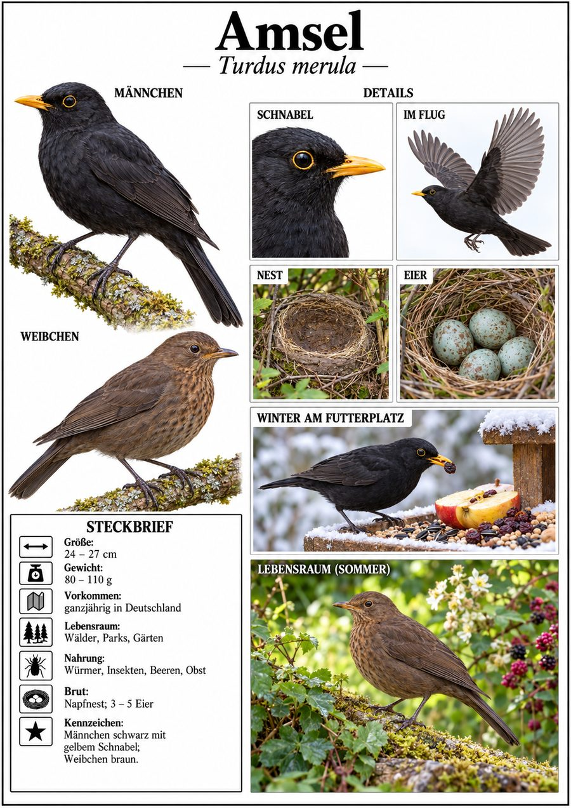
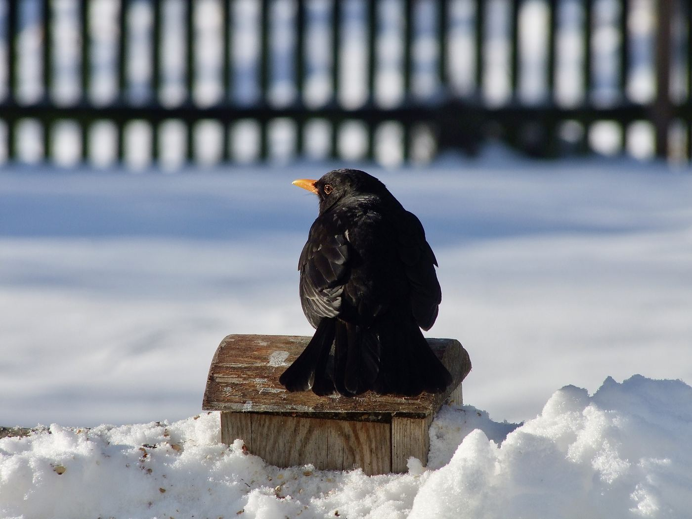

Wirbeltiere › Vögel › Sperlingsvögel › Drosseln

Turdus merula

Was du siehst: Ein Amsel-Männchen im Schnee – von hinten gut am tiefschwarzen Gefieder zu erkennen.
Foto: Michael Baur · CC BY-NC
Vor 200 Jahren war die Amsel ein scheuer Bewohner dunkler Wälder. Erst im 19. Jahrhundert zog sie in Städte und Gärten – heute gehört sie zu den häufigsten Vögeln Deutschlands. Stadtamseln sind zutraulicher als ihre Verwandten im Wald und bleiben im Winter öfter bei uns.
Auf dem Rasen hüpft die Amsel ein Stück, hält inne und legt den Kopf schief. Sie späht nach kleinsten Bewegungen im Gras – dann stößt sie zu und zieht einen Regenwurm aus dem Boden. Im Herbst und Winter frisst sie viele Beeren und Fallobst.
Ab Februar singt das Männchen von Dachfirsten und Antennen – flötend, gemächlich, oft schon vor Sonnenaufgang. Das Weibchen ist nicht schwarz, sondern braun mit leicht geflecktem Hals. Wer das nicht weiß, hält es leicht für eine andere Art.
Tafel im Stil klassischer Lehrtafeln · Foto Michael Baur, CC BY-NC · Texte Fauna Mibaso. Die Artseite ist der Endpunkt im Stammbaum.